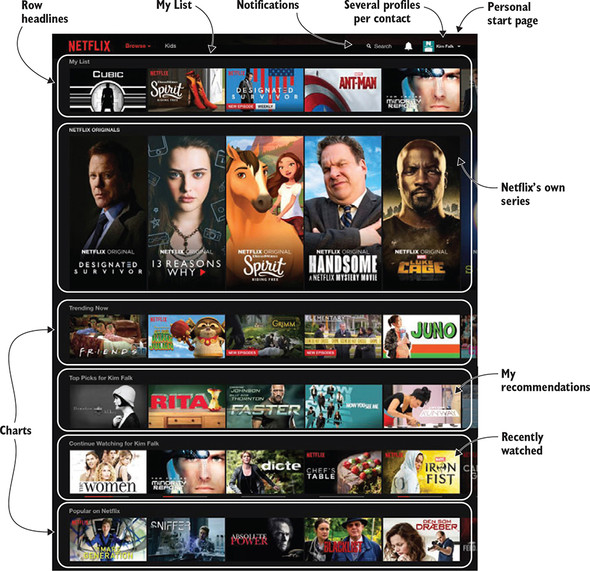
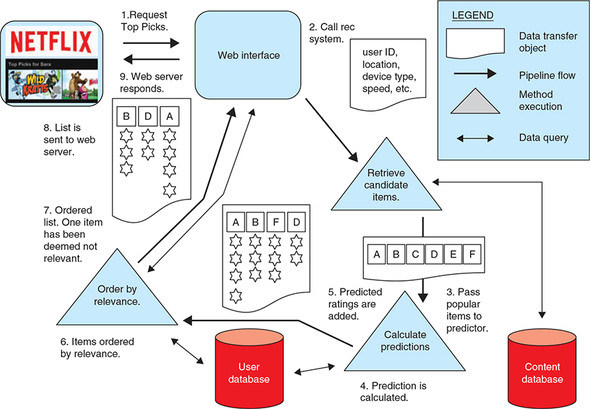
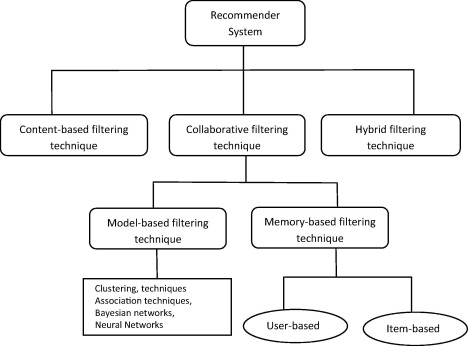
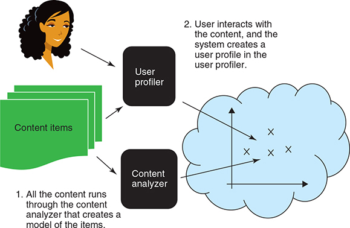
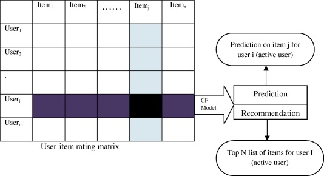
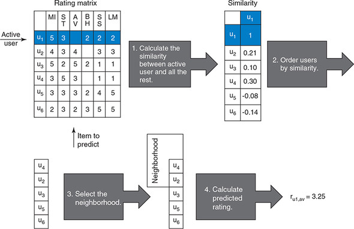
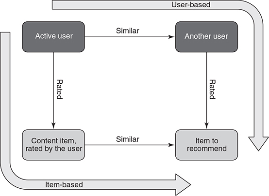

Recommender System Introduction
Contents
Recommender System Introduction¶
NOTE: Most of the material presented here is taken from the book Practical Recommender Systems. and Isinkaye, 2015 developers.google.com provides also a good introductory treatment in recommendation systems.
 Netflix landing page (browser)
All web players such as retailers and content providers offer a huge selection of products and services, with unprecedented opportunities to meet a variety of special needs and tastes. Matching your interests and tastes with the most appropriate information (e.g. products) is key to enhancing user satisfaction and loyalty. Therefore, have become interested in recommender systems, which analyze patterns of user interest in a domain (e.g. shopping) to provide personalized recommendations that suit a user’s taste.
More broadly, recommender systems can be seen as decision maker for information presented to users under complex information environments: uncertain contexts. In this way, a recommender system is an AI agent that maximizes the utility of the entity that gets to deploy it. In the case of Netflix, the utility is a function of customer retainability which is itself depends on the customer happiness expressed implicitly or explicitly via the ratings of the content that she watched. An implicit positive rating can be signaled when a user selects and finishes the content.
 A recommender for example for content would be a ranking system that considers all information available including the content and the user and returns ranked suggestions to the user related to objects that she should consume. We can distinguishing three phases of information retrieval, learning (prediction), ranking. In this case the recommendation system works mostly offline (batch).
Taxonomy of Recommender Algorithms¶
 Algorithm categories in recommender systems cite
Content-based Filtering¶
 The elements of content-based filtering. In content-based filtering technique, recommendation is made based on the similarity between items to recommend items similar to what the user likes. We gradually build a profile as the user interacts with the content.
Memory-based Collaborative Filtering (CF)¶
The items that were already rated by the user before, play a relevant role in searching for a neighbor that shares appreciation with her.
 Matrix representation of Collaborative Filtering.
User-based CF¶
 Collaborative Filtering pipeline. In user-based collaborative filtering technique calculates similarity between users by comparing their ratings on the same item, and it then computes the predicted rating for an item by the active user as a weighted average of the ratings of the item by users similar to the active user where weights are the similarities of these users with the target item.
Item-based CF¶
 Item-based vs user-based CF. In item-based filtering techniques compute predictions using the similarity between items and not the similarity between users. It builds a model of item similarities by retrieving all items rated by an active user from the user-item matrix, it determines how similar the retrieved items are to the target item, then it selects the k most similar items and their corresponding similarities are also determined. Prediction is made by taking a weighted average of the active users rating on the similar items \(k\).
Amazon.com implements item-based CF [cite]. Their recommendation engine is responsible for ~30% of their revenue. Amazon’s algorithm begins by finding related items for each item in the catalog. The term “related” could have several meanings here, but at this point, let’s loosely define it as “people who buy one item are unusually likely to buy the other.” So, for every item \(i_1\), we want every item \(i_2\) that was purchased with unusually high frequency by people who bought \(i_1\). Once this related items table is built, we can generate recommendations quickly as a series of lookups. For each item that’s part of this customer’s current context and previous interests, we look up the related items, combine them to yield the most likely items of interest, filter out items already seen or purchased, and then we are left with the items to recommend.
This algorithm has many advantages over the user-based collaborative filtering.
The majority of the computation is done offline — a batch build of the related items.
The computation of the recommendations can be done in real time as a series of lookups. The recommendations are high quality and useful, especially given enough data, and remain competitive in perceived quality even with the newer algorithms created over the last two decades.
The algorithm scales to hundreds of millions of users and tens of millions of items without sampling or other techniques that can reduce the quality of the recommendations.
The algorithm updates immediately on new information about a person’s interests. Finally, the recommendations can be explained in an intuitive way as arising from a list of items the customer remembers purchasing.
Measuring similarity with the Pearson correlation coefficient¶
The sample Pearson’s correlation coefficient \(r_{xy}\) for \(n\) paired data \((x_i,y_i)\) consisting of \(n\) pairs, \(r_{xy}\) is defined as:
where:
\(\bar{x}=\frac{1}{n}\sum_{i=1}^n x_i\) is the sample mean; and analogously for \(\bar{y}\).
Rearranging gives us this formula for \(r_{xy}\):
This formula suggests a convenient single-pass algorithm for calculating sample correlations, but, depending on the numbers involved, it can sometimes be numerically unstable.
Rearranging again gives us this formula for \(r_{xy}\):
An equivalent expression gives the formula for \(r_{xy}\) as the mean of the products of the standard scores as follows:
where is \(s_x=\sqrt{\frac{1}{n-1}\sum_{i=1}^n(x_i-\bar{x})^2}\) is the sample std deviation for \(x\); and analogously for \(s_y\)
Model-based CF¶
This technique employs the previous ratings to learn a model in order to improve the performance of Collaborative filtering Technique. The model building process can be done using machine learning or data mining techniques. These techniques can quickly recommend a set of items for the fact that they use pre-computed model and they have proved to produce recommendation results that are similar to neighborhood-based recommender techniques.
Examples of these techniques include
Dimensionality Reduction such as Principal Component Analysis (PCA)
Matrix Factorization such as Singular Value Decomposition (SVD),
Regression and Clustering.
Model-based techniques analyze the user-item matrix to identify relations between items; they use these relations to compare the list of top-N recommendations. Model based techniques resolve the sparsity problems associated with recommendation systems.